- Neural Networks Overview
- Neural Network Representation
- Computing a Neural Network's Output
- Vectorizing across multiple examples
- Explanation for Vectorized Implementation
- Activation functions
- Why do you need non-linear activation functions?
- Derivatives of activation functions
- Gradient descent for Neural Networks
- Backpropagation intuition (optional)
- Random Initialization
Neural Networks Overview
new notation:
- superscript
[i]for quantities in layer i. (compared to superscript(i)for ith training example). - subscript
ifor ith unit in a layer
Neural Network Representation
notation:
a^[i]: activation at layer i.- input layer: x, layer 0.
- hidden layer
- output layer: prediction (yhat)
- don't count input layer as a layer
a 2 layer NN:
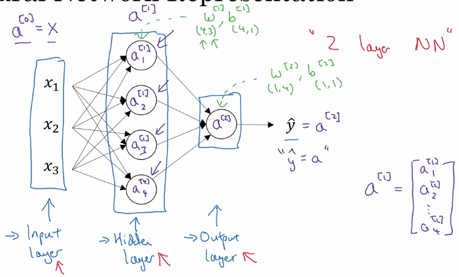
Computing a Neural Network's Output
each node in NN: 2 step computation
- z = wx + b
- a = sigmoid(z)
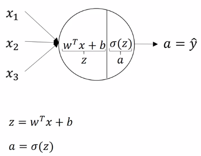
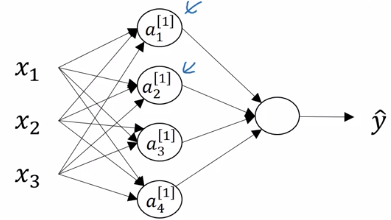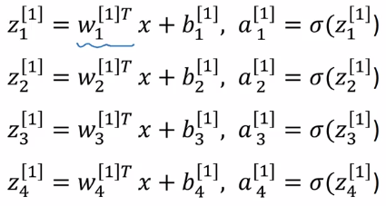
z^[1] = stacking z[1]_is vertically
a^[1] = sigmoid(z^[1])
vectorize computing z^[1]: W = stacking rows of wi.T
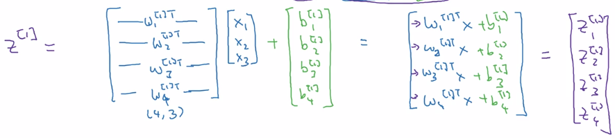
W.shape = (4,3)
b.shape = (4,1)
- input at layer i =
a^[i-1](x = a[0]) - output of each layer:
a[i] = sigmoid(W[i] a^[i-1] + b[i])
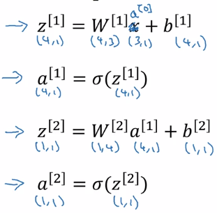
Vectorizing across multiple examples
vectorize the computation acrosse m examples.
training examples: x^(1)...x^(m)
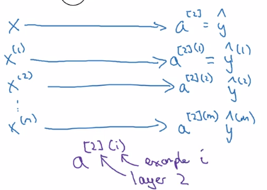
computing all yhat(i) using forloop:
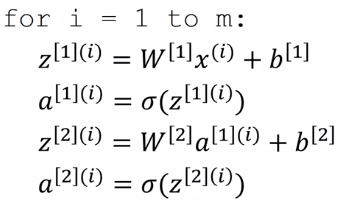
X = stacking columns of x(i), X = [x(1)...x(m)]
Z[1] = stacking columns of z1 = [z1...z1]
A = stacking columns of a(i)
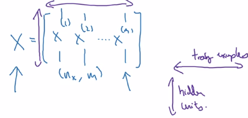
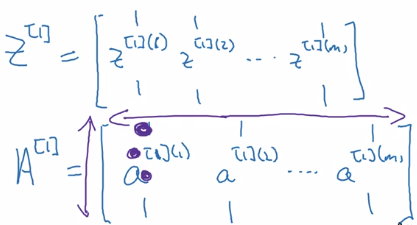
horizontal index = training example ^(i)
vertical index = nodes in layer _i/ input featurex_i
⇒
- Z[1] = W[1] * X + b[1]
- A[1] = sigmoid(Z[1])
- Z[2] = W[2] * A[1] + b[2]
- A[2] = sigmoid(Z[2]) = Yhat
Explanation for Vectorized Implementation
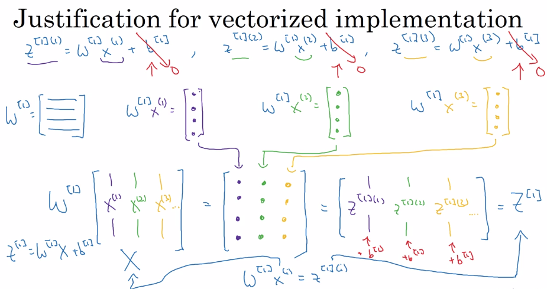
Recap:
stacking columns of training examples x(i) and activations a[l](i)
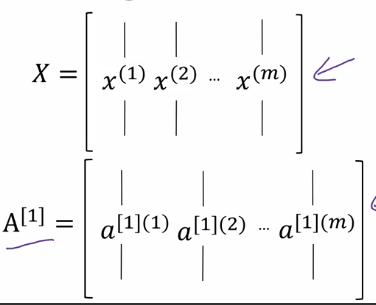
⇒
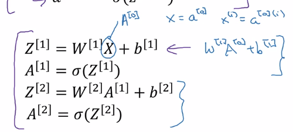
Activation functions
general case: a = g(z), where g() is a nonlinear function.
- sigmoid:
a = 1 / (1 + exp(-z))
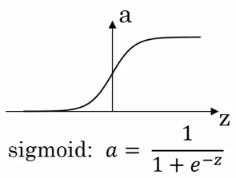
a ∈ [0,1]
- tanh:
a = (exp(z) - exp(-z)) / (exp(z) + exp(-z))
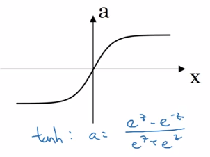
a ∈ [-1, 1] — shifted sigmoid function
⇒ data is centered, learning for next layer easier
almost always better than sigmoid, except for output layer (yhat = probability ∈[0,1])
downside of sigmoid and tanh: slope very small when |z| is large — GD slow. ⇒ ReLU
- ReLU
a = max(0, z)
da/dz = 1 or 0
NN learns faster because slope is constant when |z| large
disadvantage: da/dz = 0 when z<0
→ leaky ReLU: small slope when z<0
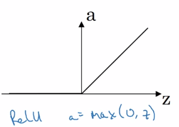
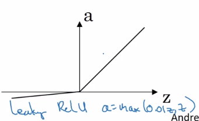
Rules of thumb:
- output layer: sigmoid for binary classification (output probability), otherwise never use sigmoid
- hidden layer: use ReLU activation by default
Why do you need non-linear activation functions?
use a linear activation function g(z) = z ?
⇒ yhat will just be a linear function of x. yhat = Wx+b
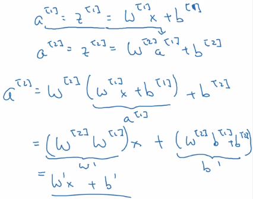
one single place when using linear activation: in output layer ( y∈R )when doing regression
Derivatives of activation functions
formulas for g'(z)
g = sigmoid
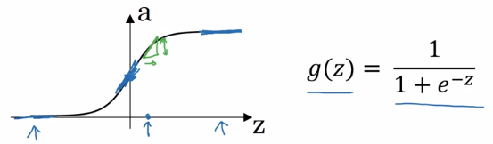
⇒ g'(z) = g(z) * (1 - g(z)) = a * (1-a)
- when z = +inf, g(z) = 1, g'(z) = 1*(1-1) = 0
- when z = -inf, g(z) = 0, g'(z) = 0
- when z = 0, g(z) = 0.5, g'(z) = 0.25
g = tanh
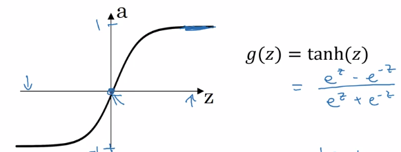
⇒ g'(z) = 1 - tanh(z)^2 = 1 - a^2
- when z = +inf, tanh(z) = 1, g' = 0
- when z = -inf, tanh(z) = -1, g' = 0
- when z = 0, tanh(z) = 0, g' = 1
g = ReLU / Leaky ReLU
ReLU: g(z) = max(0, z) g' is subgradient:
- g' = 0 when z<0
- g' = 1 when z>=0
Leaky ReLU: g(z) = max(0.01z, z)
- g' = 0.01 when z<0
- g' = 1 when z>=0
Gradient descent for Neural Networks
NN with single hidden layer: n[0] = nx, n[1] = hidden layer size, n[2] = 1 params: w[1], b[1], w[2], b[2]
w[1].shape=(n[1], n[0]), b[1].shape=(n[1], 1)w[2].shape=(n[2], n[1]) , b[2].shape=(n[2],1)- output: yhat = a[2]
cost function J(w[1],b[1],w[2],b[2]) = 1/m * sum(L(yhat, y))
Gradient descent:
- random initialization
- repeat:
- compute dw[1], db[1], dw[2], db[2]
- w[1] := w[1] - alpha*dw[1], ...
Fwd prop:
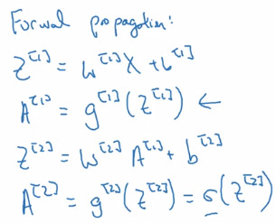
general formular for lth layer:
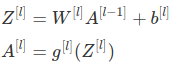
Bck prop:
computing derivatives dw, db
note: use keepdims = True or .rehape() to avoid rank-1 arraies.
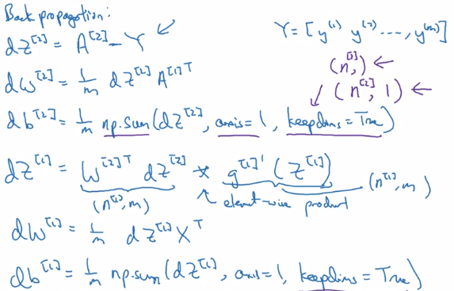
Backpropagation intuition (optional)
Derive the formulas using computation graph + chain rule.
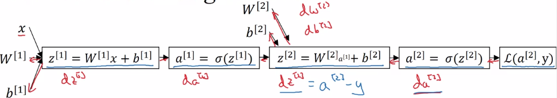
gradient for a single example x=x(i), y=y(i):
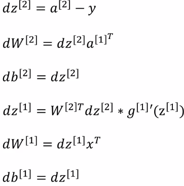
vectorized implementation for i=1,..,m:
stacking columns:X = [x(1),..,x(m)], Z = [z(1)...z(m)], Y = [y(1)..y(m)],
→
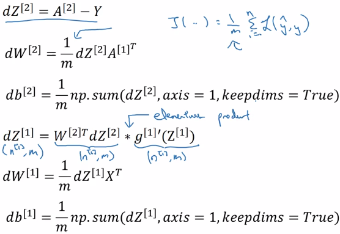
Random Initialization
Unlike logistic regression, needs init params randomly.
If we init all w and b to zeros: all activations a_i and a_j will be equal → dz_i = dz_j → all hidden units completely identical
⇒ needs to init all params random, small number (small because we want have larger derivatives for sigmoid, which is at small values, to speed up gd).
when w is init to small rand, b don't need random init.
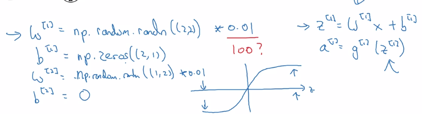
Part 3 of series «Andrew Ng Deep Learning MOOC»：
- [Neural Networks and Deep Learning] week1. Introduction to deep learning
- [Neural Networks and Deep Learning] week2. Neural Networks Basics
- [Neural Networks and Deep Learning] week3. Shallow Neural Network
- [Neural Networks and Deep Learning] week4. Deep Neural Network
- [Improving Deep Neural Networks] week1. Practical aspects of Deep Learning
- [Improving Deep Neural Networks] week2. Optimization algorithms
- [Improving Deep Neural Networks] week3. Hyperparameter tuning, Batch Normalization and Programming Frameworks
- [Structuring Machine Learning Projects] week1. ML Strategy (1)
- [Structuring Machine Learning Projects] week2. ML Strategy (2)
- [Convolutional Neural Networks] week1. Foundations of Convolutional Neural Networks
- [Convolutional Neural Networks] week2. Deep convolutional models: case studies
- [Convolutional Neural Networks] week3. Object detection
- [Convolutional Neural Networks] week4. Special applications: Face recognition & Neural style transfer
- [Sequential Models] week1. Recurrent Neural Networks
- [Sequential Models] week2. Natural Language Processing & Word Embeddings
- [Sequential Models] week3. Sequence models & Attention mechanism
Disqus 留言